ROI 总表
每个 ROI 一对缩略图，左为光学，右为 SAR，数字是 patch 对数。条带是南北向的长条，宽几十公里，长数百公里。
测试集


验证集
训练集
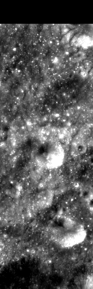
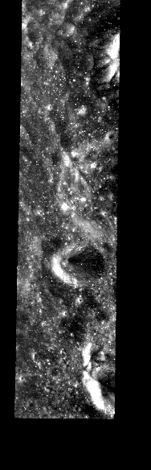
00140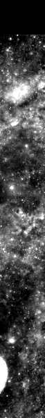
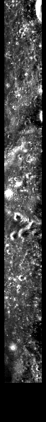
002152
 003171
003171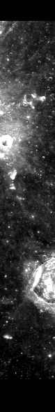
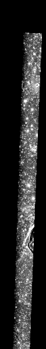
005135008291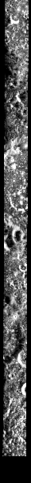
009162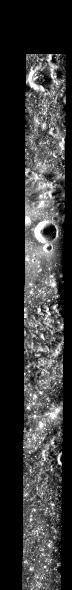
010159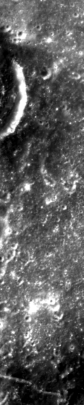
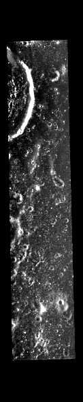
012105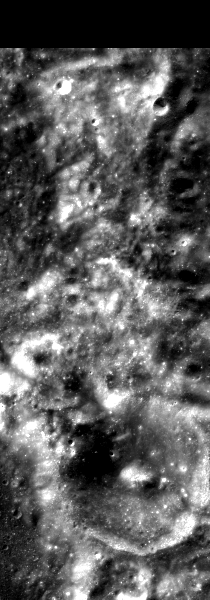
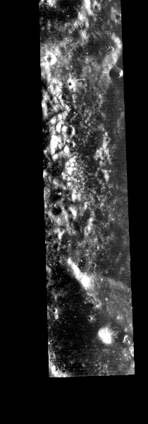
01354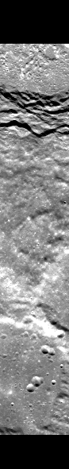
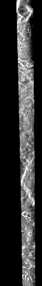
01598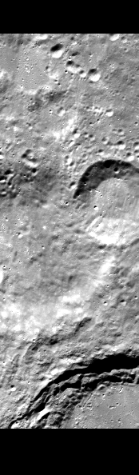
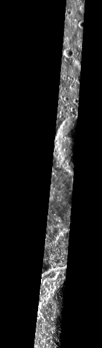
016265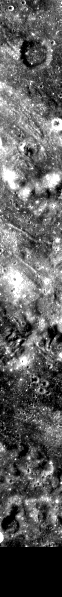
017213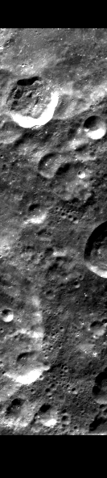
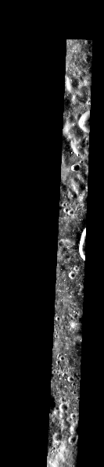
018117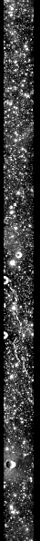
021108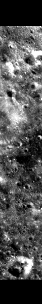
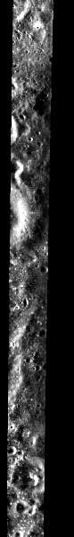
023175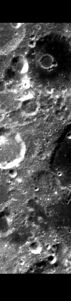
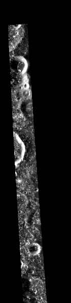
024239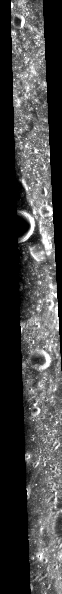
025222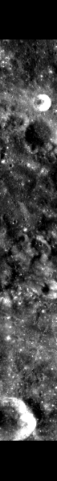
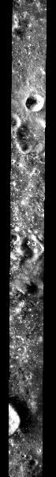
026190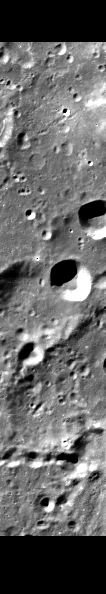
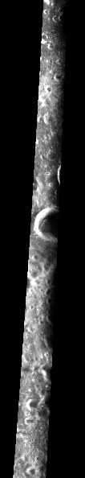
027234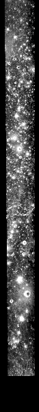
03074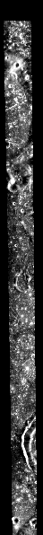
031149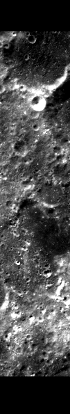
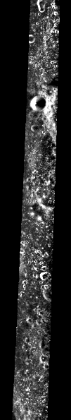
03326903419903864042210434804558
 0461650473104824
0461650473104824
 050160051196
050160051196
 0521700539305521405629605722905824806197062136063103064111065172
0521700539305521405629605722905824806197062136063103064111065172
 0661300671200681070691980726007311907414107658077165078167079185
0661300671200681070691980726007311907414107658077165078167079185表 1 全部 ROI
| ROI | 划分 | patch 对 | 带真值点 | 中心 | 入射角 | 已知问题 |
|---|---|---|---|---|---|---|
| ROI_001 | 训练集 | 40 | — | 29.1°S，131.4°E | 49.8° | |
| ROI_002 | 训练集 | 152 | — | 4.4°N，111.1°E | 51.8° | 轻度的局部错位 |
| ROI_003 | 训练集 | 171 | — | 66.1°N，126.8°W | 49.3° | 轻度的局部错位 |
| ROI_005 | 训练集 | 135 | — | 38.4°N，73.9°W | 51.0° | |
| ROI_006 | 测试集 | 81 | 67 | 22.3°S，144.0°E | 49.5° | |
| ROI_007 | 测试集 | 372 | 286 | 49.3°N，140.9°E | 50.7° | |
| ROI_008 | 训练集 | 291 | — | 7.0°N，157.9°W | 46.4° | 明显的局部错位 |
| ROI_009 | 训练集 | 162 | — | 3.5°N，60.8°E | 52.5° | 局部错位，错开的距离随位置变化 |
| ROI_010 | 训练集 | 159 | — | 17.5°N，92.8°E | 51.4° | 轻度的局部错位 |
| ROI_011 | 测试集 | 92 | 83 | 11.0°S，66.9°W | 51.4° | 目录里有别处遗留的控制点文件 |
| ROI_012 | 训练集 | 105 | — | 35.6°S，167.2°W | 54.7° | |
| ROI_013 | 训练集 | 54 | — | 43.4°S，167.1°E | 53.7° | |
| ROI_015 | 训练集 | 98 | — | 59.5°N，63.5°W | 50.0° | 轻度的局部错位 |
| ROI_016 | 训练集 | 265 | — | 66.5°S，8.4°W | 50.0° | 明显的局部错位 |
| ROI_017 | 训练集 | 213 | — | 3.2°S，126.9°W | 47.8° | 与 ROI_054 的范围部分重叠 |
| ROI_018 | 训练集 | 117 | — | 45.6°S，8.6°E | 50.4° | |
| ROI_020 | 测试集 | 112 | 91 | 45.5°S，42.6°W | 49.4° | |
| ROI_021 | 训练集 | 108 | — | 3.5°N，58.1°W | 52.4° | |
| ROI_023 | 训练集 | 175 | — | 31.5°N，160.3°E | 50.7° | 轻度的局部错位 |
| ROI_024 | 训练集 | 239 | — | 52.5°S，70.4°E | 52.4° | |
| ROI_025 | 训练集 | 222 | — | 66.5°S，104.1°E | 49.5° | 明显的局部错位 |
| ROI_026 | 训练集 | 190 | — | 3.5°N，150.3°W | 46.9° | 轻度的局部错位 |
| ROI_027 | 训练集 | 234 | — | 66.5°S，123.9°W | 48.9° | 轻度的局部错位；编号缺 95、98、99 |
| ROI_030 | 训练集 | 74 | — | 46.5°N，72.2°W | 51.0° | |
| ROI_031 | 训练集 | 149 | — | 38.5°N，77.5°W | 52.9° | |
| ROI_033 | 训练集 | 269 | — | 52.5°S，97.1°E | 51.7° | |
| ROI_034 | 训练集 | 199 | — | 50.8°S，174.6°E | 53.7° | 一幅 CE-2 分幅的经度差了 180° |
| ROI_035 | 验证集 | 214 | 172 | 24.5°S，118.3°E | 51.0° | |
| ROI_037 | 测试集 | 159 | 141 | 10.5°S，40.7°W | 53.0° | 与 ROI_060 重复（ROI_060 已删除） |
| ROI_038 | 训练集 | 64 | — | 32.9°N，34.5°W | 53.3° | 与 ROI_071 的范围部分重叠 |
| ROI_042 | 训练集 | 21 | — | 57.0°N，152.1°W | 48.2° | |
| ROI_043 | 训练集 | 48 | — | 22.6°N，33.6°E | 52.8° | |
| ROI_045 | 训练集 | 58 | — | 12.1°N，9.1°E | 51.6° | |
| ROI_046 | 训练集 | 165 | — | 38.5°S，51.0°W | 51.5° | |
| ROI_047 | 训练集 | 31 | — | 47.3°S，136.2°W | 54.9° | |
| ROI_048 | 训练集 | 24 | — | 1.9°N，142.6°W | 45.5° | 轻度的局部错位 |
| ROI_049 | 验证集 | 113 | 88 | 17.5°N，26.1°W | 52.5° | |
| ROI_050 | 训练集 | 160 | — | 17.5°S，153.7°W | 47.6° | 明显的局部错位 |
| ROI_051 | 训练集 | 196 | — | 38.5°N，109.9°E | 52.1° | |
| ROI_052 | 训练集 | 170 | — | 11.1°N，139.1°E | 48.8° | 明显的局部错位 |
| ROI_053 | 训练集 | 93 | — | 3.5°S，104.7°W | 49.6° | |
| ROI_054 | 测试集 | 168 | 145 | 3.5°S，127.3°W | 47.5° | 轻度的局部错位；Mini-RF 目录里有两个 SAR 文件；与 ROI_017 的范围部分重叠 |
| ROI_055 | 训练集 | 214 | — | 38.5°N，134.9°E | 50.5° | 轻度的局部错位 |
| ROI_056 | 训练集 | 296 | — | 1.9°N，130.4°E | 48.6° | 轻度的局部错位 |
| ROI_057 | 训练集 | 229 | — | 28.2°N，22.5°W | 53.3° | CE-2 分幅的投影参数被改错，读取时纠正 |
| ROI_058 | 训练集 | 248 | — | 30.5°N，16.2°W | 51.4° | CE-2 分幅的投影参数被改错，读取时纠正 |
| ROI_059 | 测试集 | 146 | 140 | 24.5°N，11.4°E | 53.7° | |
| ROI_061 | 训练集 | 97 | — | 31.5°N，28.5°W | 53.0° | |
| ROI_062 | 训练集 | 136 | — | 31.5°N，58.8°W | 53.2° | |
| ROI_063 | 训练集 | 103 | — | 25.2°N，1.1°W | 53.2° | |
| ROI_064 | 训练集 | 111 | — | 37.5°N，14.0°E | 53.2° | |
| ROI_065 | 训练集 | 172 | — | 29.5°S，102.7°E | 53.0° | 轻度的局部错位；CE-2 分幅的投影参数被改错，读取时纠正 |
| ROI_066 | 训练集 | 130 | — | 2.8°N，67.7°W | 52.3° | |
| ROI_067 | 训练集 | 120 | — | 52.5°N，23.8°W | 53.7° | |
| ROI_068 | 训练集 | 107 | — | 10.2°N，21.2°W | 52.5° | 轻度的局部错位 |
| ROI_069 | 训练集 | 198 | — | 19.1°S，22.6°E | 50.1° | 轻度的局部错位 |
| ROI_070 | 验证集 | 168 | 113 | 27.5°S，31.8°W | 52.7° | CE-2 分幅的投影参数被改错，读取时纠正 |
| ROI_071 | 验证集 | 40 | 30 | 29.4°N，34.2°W | 52.6° | 与 ROI_038 的范围部分重叠 |
| ROI_072 | 训练集 | 60 | — | 30.0°S，22.3°W | 52.2° | |
| ROI_073 | 训练集 | 119 | — | 28.5°N，46.8°W | 53.0° | 对齐控制点重标过，patch 重新编号；CE-2 分幅的投影参数被改错，读取时纠正 |
| ROI_074 | 训练集 | 141 | — | 10.5°N，37.7°E | 52.1° | ROI_73 的一份作废控制点实为本 ROI 的 |
| ROI_075 | 验证集 | 183 | 174 | 38.8°S，51.9°E | 51.8° | |
| ROI_076 | 训练集 | 58 | — | 9.6°S，32.2°E | 53.2° | |
| ROI_077 | 训练集 | 165 | — | 10.5°N，85.2°W | 51.9° | |
| ROI_078 | 训练集 | 167 | — | 38.5°S，84.2°W | 48.5° | 轻度的局部错位 |
| ROI_079 | 训练集 | 185 | — | 31.5°S，55.7°E | 50.0° | 轻度的局部错位 |
| ROI_080 | 验证集 | 107 | 75 | 45.5°N，3.3°E | 53.7° |